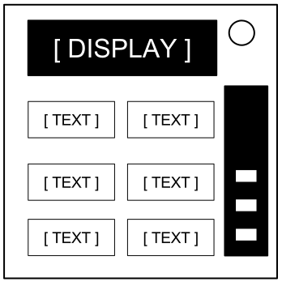

Keep Talking and Nobody Explodes v. 1
Introductie
Welkom in de gevaarlijke en uitdagende wereld van het ontmantelen van bommen.
Bestudeer deze handleiding goed; jij bent de expert. Op deze pagina’s vind je alles wat je nodig hebt om zelfs de meest listige bommen te ontmantelen.
En onthoud – Eén kleine vergissing en alles kan voorbij zijn!
Keep Talking and Nobody Explodes v. 1
Bommen ontmantelen
Bommen ontmantelen
Een bom ontploft zodra de timer 0:00 bereikt of wanneer er te veel fouten zijn gemaakt. De enige manier om een bom te ontmantelen is door alle modules uit te schakelen voordat de tijd voorbij is.
Voorbeeld bom
 Voorkant |  Zijkant |
Modules
Elke bom kan tot 11 modules bevatten die moeten worden uitgeschakeld. Elke module staat op zichzelf. Ze kunnen in willekeurige volgorde worden uitgeschakeld.
Instructies voor het uitschakelen van de modules kunnen worden gevonden in Sectie 1. “Veeleisende” modules zijn een geval apart en worden beschreven in Sectie 2.
Fouten
Fouten indicator

Als de ontmantelaar fouten maakt, zal de bom deze aangeven op de indicator boven de tijdsklok. Bommen met een foutenindicator ontploffen bij de derde fout. Na een fout zal de tijd sneller verlopen.
Als er geen foutenindicator boven de tijdsklok staat, zal de bom bij de eerste fout ontploffen. Er is geen ruimte voor vergissingen.
Informatie verzamelen
Soms is er bij uitschakelinstructies specifieke informatie nodig over de bom, bijvoorbeeld het serienummer. Deze informatie kan meestal op de bovenkant, onderkant of zijkanten van de bom gevonden worden. Zie bijlages A, B en C voor identificatie instructies die handig kunnen zijn bij het ontmantelen van sommige modules.
Keep Talking and Nobody Explodes v. 1
Sectie 1: Modules

Sectie 1: Modules
Modules kun je herkennen aan een LED in de rechterbovenhoek. Als deze LED groen brandt is de module uitgeschakeld.
Alle modules moeten worden uitgeschakeld om de bom te ontmantelen.
Keep Talking and Nobody Explodes v. 1
Draden

Over de draden
Elektrische draden zijn het levensbloed van elektronica! Nee, wacht, elektriciteit is het levensbloed. Draden zijn meer de slagaderen. De aderen? Maakt niet uit…
- Een module met elektrische draden kan 3 tot 6 draden hebben.
- Slechts de enige juiste draad moet worden doorgeknipt om de module uit te schakelen.
- De draden worden van bovenaf geteld.
| 3 draden: Als er geen rode draden zijn, knip de tweede draad door. Anders: Als de laatste draad wit is, knip de laatste draad door. Anders: Als er meer dan één blauwe draad is, knip de laatste blauwe draad door. Anders: Knip de laatste draad door. |
| 4 draden: Als er meer dan één rode draad is en het laatste cijfer van het serienummer is oneven, knip de laatste rode draad door. Anders: Als de laatste draad geel is en er zijn geen rode draden, knip de eerste draad door. Anders: Als er precies één blauwe draad is, knip de eerste draad door. Anders: Als er meer dan één gele draad is, knip de laatste draad door. Anders: Knip de tweede draad door. |
| 5 draden: Als de laatste draad zwart is en het laatste cijfer van het serienummer is oneven, knip de vierde draad door. Anders: Als er precies één rode draad is en meer dan één gele, knip de eerste draad door. Anders: Als er geen zwarte draden zijn, knip de tweede draad door. Anders: Knip de eerste draad door. |
| 6 draden: Als er geen gele draden zijn en het laatste cijfer van het serienummer is oneven, knip de derde draad door. Anders: Als er precies één gele draad is en meer dan één witte draad, knip de vierde draad door. Anders: Als er geen rode draden zijn, knip de laatste draad door. Anders: Knip de vierde draad door. |
Keep Talking and Nobody Explodes v. 1
De knop

Over de knop
Je denkt misschien dat een knop die zegt dat je er op moet drukken recht toe recht aan is. Precies dat soort ideeën zorgt ervoor dat er mensen worden opgeblazen.
Zie Bijlage A voor de indicator identificatie.
Zie Bijlage B voor de batterij identificatie.
Volg deze regels op in de volgorde waarin ze zijn opgeschreven. Voer de eerste actie uit die toepasbaar is:
- Als de knop blauw is met de tekst “Abort”, druk dan op de knop, houd vast en ga verder met “Een ingedrukte knop loslaten”.
- Als er meer dan 1 batterij op de bom zit en er staat “Detonate” op de knop, druk deze dan in en laat onmiddellijk weer los.
- Als de knop wit is en er is een brandende indicator met het label “CAR”, druk op de knop, houd vast en ga verder met “Een ingedrukte knop loslaten”.
- Als er meer dan 2 batterijen op de bom zitten en er is een brandende indicator met het label “FRK”, druk de knop in en laat deze onmiddellijk weer los.
- Als de knop geel is, druk op de knop, houd vast en ga verder met “Een ingedrukte knop loslaten”.
- Als de knop rood is met de tekst “Hold”, druk deze dan in en laat onmiddellijk weer los.
- Als geen van bovenstaande zaken van toepassing is, druk op de knop, houd vast en ga verder met “Een ingedrukte knop loslaten”.
Een ingedrukte knop loslaten
Als je de knop indrukt en vasthoudt, zal er een gekleurde strook rechts op de module gaan branden. Afhankelijk van de kleur hiervan, moet je de knop op een bepaald moment loslaten:
- Blauwe strook: laat los wanneer de timer ergens een 4 bevat.
- Witte strook: laat los wanneer de timer ergens een 1 bevat.
- Gele strook: laat los wanneer de timer ergens een 5 bevat.
- Elke andere kleur strook: laat los wanneer de timer ergens een 1 bevat.
Keep Talking and Nobody Explodes v. 1
Keypads

Over keypads
Ik weet niet wat deze symbolen precies betekenen, maar volgens mij heeft het te maken met het occulte.
- Slechts één van onderstaande kolommen bevat alle symbolen van het keypad.
- Klik op de vier knoppen in de volgorde waarin de symbolen in die kolom staan van boven naar beneden.
 |  |  |  |  | | |||||
 | |  |  |  | | |||||
 |  |  |  | |  | |||||
 | |  |  |  |  | |||||
|  |  | | | | |||||
 | | |  |  |  | |||||
| | | |  |  |
Keep Talking and Nobody Explodes v. 1
Simon zegt

Over Simon zegt
Dit is een van die spelletjes die je als kind speelde waar je het patroon moest herhalen. Alleen deze komt waarschijnlijk uit een 1-eurowinkel.
- Eén van de vier gekleurde knoppen zal knipperen.
- Gebruik de tabel hieronder en klik op de knop met die kleur.
- De originele knop zal knipperen, gevolgd door een andere knop. Herhaal deze volgorde gebruikmakend van de kleurtabel.
- De volgorde zal bij elke goede reeks, één kleur langer worden totdat je de module hebt uitgeschakeld.
Als het serienummer een klinker bevat:
| Rood knippert | Blauw knippert | Groen knippert | Geel knippert | ||
|---|---|---|---|---|---|
| Druk op knop: | 0 Fouten | Blauw | Rood | Geel | Groen | 1 Fout | Geel | Groen | Blauw | Rood | 2 Fouten | Groen | Rood | Geel | Blauw |
Als het serienummer geen klinker bevat:
| Rood knippert | Blauw knippert | Groen knippert | Geel knippert | ||
|---|---|---|---|---|---|
| Druk op knop: | 0 Fouten | Blauw | Geel | Groen | Rood | 1 Fout | Rood | Blauw | Geel | Groen | 2 Fouten | Geel | Groen | Blauw | Rood |
Keep Talking and Nobody Explodes v. 1
Who's on First

Over Who’s on First
Dit apparaat lijkt wel uit een komedie te komen, wat misschien grappig zou zijn als er geen bom aan vast zat. Ik hou dit kort, gezien woorden de boel alleen maar ingewikkeld maken.
- Lees de display en doe stap 1 om te bepalen welke tekst moet worden gelezen.
- Gebruikmakend van deze tekst, doe stap 2 om te bepalen welke knop moet worden ingedrukt.
- Herhaal totdat de module is uitgeschakeld.
Stap 1:
Zoek de juiste tabel gebaseerd op de tekst op het display. Lees de tekst op de aangegeven knop en ga verder met stap 2. :
|
|
|
|
|
| ||||||||||||||||||||||||||||||||||||||||||||||||
|
|
|
|
| |||||||||||||||||||||||||||||||||||||||||||||||||
|
|
|
|
|
| ||||||||||||||||||||||||||||||||||||||||||||||||
|
|
|
|
|
| ||||||||||||||||||||||||||||||||||||||||||||||||
|
|
|
| ||||||||||||||||||||||||||||||||||||||||||||||||||
Keep Talking and Nobody Explodes v. 1
Who's on First
Stap 2:
Gebruik de gevonden tekst uit stap 1 en druk op de eerste knop die in de bijbehorende rij staat:
| "READY": | YES, OKAY, WHAT, MIDDLE, LEFT, PRESS, RIGHT, BLANK, READY, NO, FIRST, UHHH, NOTHING, WAIT |
|---|---|
| "FIRST": | LEFT, OKAY, YES, MIDDLE, NO, RIGHT, NOTHING, UHHH, WAIT, READY, BLANK, WHAT, PRESS, FIRST |
| "NO": | BLANK, UHHH, WAIT, FIRST, WHAT, READY, RIGHT, YES, NOTHING, LEFT, PRESS, OKAY, NO, MIDDLE |
| "BLANK": | WAIT, RIGHT, OKAY, MIDDLE, BLANK, PRESS, READY, NOTHING, NO, WHAT, LEFT, UHHH, YES, FIRST |
| "NOTHING": | UHHH, RIGHT, OKAY, MIDDLE, YES, BLANK, NO, PRESS, LEFT, WHAT, WAIT, FIRST, NOTHING, READY |
| "YES": | OKAY, RIGHT, UHHH, MIDDLE, FIRST, WHAT, PRESS, READY, NOTHING, YES, LEFT, BLANK, NO, WAIT |
| "WHAT": | UHHH, WHAT, LEFT, NOTHING, READY, BLANK, MIDDLE, NO, OKAY, FIRST, WAIT, YES, PRESS, RIGHT |
| "UHHH": | READY, NOTHING, LEFT, WHAT, OKAY, YES, RIGHT, NO, PRESS, BLANK, UHHH, MIDDLE, WAIT, FIRST |
| "LEFT": | RIGHT, LEFT, FIRST, NO, MIDDLE, YES, BLANK, WHAT, UHHH, WAIT, PRESS, READY, OKAY, NOTHING |
| "RIGHT": | YES, NOTHING, READY, PRESS, NO, WAIT, WHAT, RIGHT, MIDDLE, LEFT, UHHH, BLANK, OKAY, FIRST |
| "MIDDLE": | BLANK, READY, OKAY, WHAT, NOTHING, PRESS, NO, WAIT, LEFT, MIDDLE, RIGHT, FIRST, UHHH, YES |
| "OKAY": | MIDDLE, NO, FIRST, YES, UHHH, NOTHING, WAIT, OKAY, LEFT, READY, BLANK, PRESS, WHAT, RIGHT |
| "WAIT": | UHHH, NO, BLANK, OKAY, YES, LEFT, FIRST, PRESS, WHAT, WAIT, NOTHING, READY, RIGHT, MIDDLE |
| "PRESS": | RIGHT, MIDDLE, YES, READY, PRESS, OKAY, NOTHING, UHHH, BLANK, LEFT, FIRST, WHAT, NO, WAIT |
| "YOU": | SURE, YOU ARE, YOUR, YOU'RE, NEXT, UH HUH, UR, HOLD, WHAT?, YOU, UH UH, LIKE, DONE, U |
| "YOU ARE": | YOUR, NEXT, LIKE, UH HUH, WHAT?, DONE, UH UH, HOLD, YOU, U, YOU'RE, SURE, UR, YOU ARE |
| "YOUR": | UH UH, YOU ARE, UH HUH, YOUR, NEXT, UR, SURE, U, YOU'RE, YOU, WHAT?, HOLD, LIKE, DONE |
| "YOU'RE": | YOU, YOU'RE, UR, NEXT, UH UH, YOU ARE, U, YOUR, WHAT?, UH HUH, SURE, DONE, LIKE, HOLD |
| "UR": | DONE, U, UR, UH HUH, WHAT?, SURE, YOUR, HOLD, YOU'RE, LIKE, NEXT, UH UH, YOU ARE, YOU |
| "U": | UH HUH, SURE, NEXT, WHAT?, YOU'RE, UR, UH UH, DONE, U, YOU, LIKE, HOLD, YOU ARE, YOUR |
| "UH HUH": | UH HUH, YOUR, YOU ARE, YOU, DONE, HOLD, UH UH, NEXT, SURE, LIKE, YOU'RE, UR, U, WHAT? |
| "UH UH": | UR, U, YOU ARE, YOU'RE, NEXT, UH UH, DONE, YOU, UH HUH, LIKE, YOUR, SURE, HOLD, WHAT? |
| "WHAT?": | YOU, HOLD, YOU'RE, YOUR, U, DONE, UH UH, LIKE, YOU ARE, UH HUH, UR, NEXT, WHAT?, SURE |
| "DONE": | SURE, UH HUH, NEXT, WHAT?, YOUR, UR, YOU'RE, HOLD, LIKE, YOU, U, YOU ARE, UH UH, DONE |
| "NEXT": | WHAT?, UH HUH, UH UH, YOUR, HOLD, SURE, NEXT, LIKE, DONE, YOU ARE, UR, YOU'RE, U, YOU |
| "HOLD": | YOU ARE, U, DONE, UH UH, YOU, UR, SURE, WHAT?, YOU'RE, NEXT, HOLD, UH HUH, YOUR, LIKE |
| "SURE": | YOU ARE, DONE, LIKE, YOU'RE, YOU, HOLD, UH HUH, UR, SURE, U, WHAT?, NEXT, YOUR, UH UH |
| "LIKE": | YOU'RE, NEXT, U, UR, HOLD, DONE, UH UH, WHAT?, UH HUH, YOU, LIKE, SURE, YOU ARE, YOUR |
Keep Talking and Nobody Explodes v. 1
Memory

Over memory
Het geheugen is een breekbaar iets. Maar alles is breekbaar als er een bom ontploft, dus let op!
- Druk op de juiste knop om naar de volgende fase te komen. Doorloop alle fases om de module uit te schakelen.
- Een verkeerde knop indrukken zorgt ervoor dat de module weer in fase 1 komt.
- De volgorde van de knoppen wordt van links naar rechts geteld.
Fase 1:
Als er een 1 staat, druk op de tweede knop.
Als er een 2 staat, druk op de tweede knop.
Als er een 3 staat, druk op de derde knop.
Als er een 4 staat, druk op de vierde knop.
Fase 2:
Als er een 1 staat, druk op de knop met de “4”.
Als er een 2 staat, druk op de knop op de positie die je ook in fase 1 indrukte.
Als er een 3 staat, druk op de eerste knop.
Als er een 4 staat, druk op de knop op de positie die je ook in fase 1 indrukte.
Fase 3:
Als er een 1 staat, druk op de knop met hetzelfde label als in fase 2.
Als er een 2 staat, druk op de knop met hetzelfde label als in fase 1.
Als er een 3 staat, druk op de derde knop.
Als er een 4 staat, druk op de knop met de “4”.
Fase 4:
Als er een 1 staat, druk op de knop op de positie die je ook in fase 1 indrukte.
Als er een 2 staat, druk op de eerste knop.
Als er een 3 staat, druk op de knop op de positie die je ook in fase 2 indrukte.
Als er een 4 staat, druk op de knop op de positie die je ook in fase 2 indrukte.
Fase 5:
Als er een 1 staat, druk op de knop met hetzelfde label als in fase 1.
Als er een 2 staat, druk op de knop met hetzelfde label als in fase 2.
Als er een 3 staat, druk op de knop met hetzelfde label als in fase 4.
Als er een 4 staat, druk op de knop met hetzelfde label als in fase 3.
Keep Talking and Nobody Explodes v. 1
Morse Code

Over morse code
Een oude vorm van scheepscommunicatie? Wat zal het volgende zijn? Het is wel échte Morsecode, dus let op, misschien leer je nog wat.
- Vertaal het signaal van het knipperlicht met de Morsecodeschema om een van de woorden uit de tabel te maken.
- Het signaal herhaalt zich met een lange pauze tussen de herhalingen.
- Als het woord is gevonden, voer de juiste frequentie in en druk op de verzendknop (TX).
| Als het woord is: | Reageer op frequentie: |
|---|---|
| shell | 3.505 MHz |
| halls | 3.515 MHz |
| slick | 3.522 MHz |
| trick | 3.532 MHz |
| boxes | 3.535 MHz |
| leaks | 3.542 MHz |
| strobe | 3.545 MHz |
| bistro | 3.552 MHz |
| flick | 3.555 MHz |
| bombs | 3.565 MHz |
| break | 3.572 MHz |
| brick | 3.575 MHz |
| steak | 3.582 MHz |
| sting | 3.592 MHz |
| vector | 3.595 MHz |
| beats | 3.600 MHz |
Keep Talking and Nobody Explodes v. 1
Ingewikkelde draden

Over ingewikkelde draden
Deze draden zijn niet zoals de andere. Sommige hebben strepen! Dat maakt ze compleet anders. Het goede nieuws is dat we beknopte instructies ervoor hebben gevonden! Misschien te beknopt...
- Kijk naar elke draad: er zit een LED boven de draad en ruimte voor een “★”-symbool onder de draad.
- Gebruik voor elke draad/LED/symbool-combinatie het Venndiagram hieronder om te bepalen of je de draad moet doorknippen.
- Elke draad kan meerdere kleuren strepen hebben.
| Letter | Instructie |
|---|---|
| C | Knip de draad door |
| D | Knip de draad niet door |
| S | Knip de draad door als het laatste cijfer van het serienummer even is |
| P | Knip de draad door als de bom een parallelle poort heeft |
| B | Knip de draad door als de bom twee of meer batterijen heeft |
Zie Bijlage B voor batterij identificatie.
Zie Bijlage C voor poort identificatie.
Keep Talking and Nobody Explodes v. 1
Draden reeks

Over draden reeks
Het is moeilijk te zeggen hoe dit mechanisme werkt. De bouwkunde is indrukwekkend, maar er is vast een makkelijkere manier om negen draden aan te sluiten.
- Binnen deze module zijn diverse panelen met draden erop. Er is maar één paneel tegelijk zichtbaar. Ga naar het volgende paneel met de pijl omlaag en naar de vorige met de pijl omhoog.
- Ga niet naar het volgende paneel tot je er zeker van bent dat je alle benodigde draden op het huidige paneel hebt doorgeknipt.
- Knip de draden door volgens de volgende tabellen. Bij het aantal keer voorkomen van draden worden de draden op alle panelen binnen de module opgeteld.
| Aantal rode draden | |
|---|---|
| Voorkomen van draden | Knip als verbonden met: |
| Eerste rode draad | C |
| Tweede rode draad | B |
| Derde rode draad | A |
| Vierde rode draad | A of C |
| Vijfde rode draad | B |
| Zesde rode draad | A of C |
| Zevende rode draad | A, B of C |
| Achste rode draad | A of B |
| Negende rode draad | B |
| Aantal blauwe draden | |
|---|---|
| Voorkomen van draden | Knip als verbonden me: |
| Eerste blauwe draad | B |
| Tweede blauwe draad | A of C |
| Derde blauwe draad | B |
| Vierde blauwe draad | A |
| Vijfde blauwe draad | B |
| Zesde blauwe draad | B of C |
| Zevende blauwe draad | C |
| Achste blauwe draad | A of C |
| Negende blauwe draad | A |
| Aantal zwarte draden | |
|---|---|
| Voorkomen van draden | Knip als verbonden met: |
| Eerst zwarte draad | A, B of C |
| Tweede zwarte draad | A of C |
| Derde zwarte draad | B |
| Vierde zwarte draad | A of C |
| Vijfde zwarte draad | B |
| Zesde zwarte draad | B of C |
| Zevende zwarte draad | A of B |
| Achste zwarte draad | C |
| Negende zwarte draad | C |
Keep Talking and Nobody Explodes v. 1
Doolhoven

Over doolhoven
Dit lijkt wel een doolhof. Vast gestolen van de placemat in een restaurant.
- Vind het juiste doolhof aan de hand van de ronde markeringen.
- De ontmantelaar moet het witte lichtje naar de rode driehoek brengen d.m.v. de pijlknoppen.
- Waarschuwing: Ga niet over de lijnen in het doolhof heen. Deze lijnen zijn op de bom niet te zien.


Keep Talking and Nobody Explodes v. 1
Wachtwoorden

Over wachtwoorden
Gelukkig voldoet dit wachtwoord niet aan de veiligheidseisen van de regering: 22 tekens, zowel hoofd- als kleine letters, getallen in willekeurige volgorde zonder palindromen groter dan 3.
- De knoppen boven en onder elke letter bladeren door de opties voor die positie.
- Slechts één combinatie van de letters kan een woord uit onderstaande lijst vormen.
- Druk één keer op de submit knop zodra het wachtwoord ingevoerd is.
| about | after | again | below | could |
| every | first | found | great | house |
| large | learn | never | other | place |
| plant | point | right | small | sound |
| spell | still | study | their | there |
| these | thing | think | three | water |
| where | which | world | would | write |
Keep Talking and Nobody Explodes v. 1
Sectie 2: Veeleisende modules

Sectie 2: Veeleisende modules
Veeleisende modules kunnen niet worden uitgeschakeld, maar vormen een terugkerend risico.
Veeleisende modules hebben een kleine timer van 2 cijfers bovenaan het midden. Ze kunnen worden geactiveerd door interactie met de bom. Zodra ze geactiveerd zijn, moet er regelmatig naar deze modules worden gekeken voor hun tijd voorbij is anders telt het als een fout.
Blijf opletten: Deze modules kunnen zichzelf weer activeren.
Keep Talking and Nobody Explodes v. 1
Afreageren

Over afreageren
Computers hacken is zwaar werk! Nou ja, dat is het meestal. Dit werkje kan waarschijnlijk ook worden gedaan door een geautomatiseerde knopjesdrukker.
- Reageer op de computerteksten door “Y” voor “Ja” en “N” voor “Nee” aan te klikken.
Keep Talking and Nobody Explodes v. 1
Condensator ontladen

Over condensator ontladen
Ik ga ervan uit dat dit alleen is om je af te leiden, want anders is het wel erg beroerde elektronica.
- Druk de hendel naar beneden en houdt deze omlaag om de spanning uit de condensator te laten lopen.
Keep Talking and Nobody Explodes v. 1
Knoppen

Over knoppen
Onnodig ingewikkeld en oneindig veeleisend: Stel je voor dat deze expertise voor iets anders werd gebruikt dan het maken van diabolische puzzels.
- De knop kan in vier posities worden gezet.
- De knop moet in de juiste positie staan wanneer de timer op deze module de nul bereikt.
- De juiste positie kan worden bepaald via de aan/uit-configuratie van de twaalf LED’s.
- De positie van de knop is relatief tot het label “UP”, welke gedraaid kan zijn.
LED Configuraties
Knop naar boven:
| X | X | X | |||
| X | X | X | X | X |
| X | X | X | |||
| X | X | X | X |
Knop mnaar beneden:
| X | X | X | |||
| X | X | X | X | X |
| X | X | X | |||
| X | X |
Knop naar links:
| X | |||||
| X | X | X | X |
| X | |||||
| X | X |
Knop naar rechts:
| X | X | X | X | X | |
| X | X | X | X |
| X | X | X | |||
| X | X | X | X |
X = verlichte LED
Keep Talking and Nobody Explodes v. 1
Bijlage A
Bijlage A: Indicator identificatie
Gelabelde indicatorlichten kunnen aan de zijkant van de bom worden gevonden.

Gebruikelijke indicatoren
- SND
- CLR
- CAR
- IND
- FRQ
- SIG
- NSA
- MSA
- TRN
- BOB
- FRK
Keep Talking and Nobody Explodes v. 1
Appendix B
Bijlage B: Batterij identificatie
De verschillende batterijsoorten kunnen aan de zijkanten van de bom worden gevonden.
| Batterij | Type |
|---|---|
 | AA |
 | D |
Keep Talking and Nobody Explodes v. 1
Bijlage C
Bijlage C: Poort identificatie
Digitale en analoge poorten kunnen worden gevonden op de zijkanten van de bom.
| Poort | Naam |
|---|---|
 | DVI-D |
 | Parallel |
 | PS/2 |
 | RJ-45 |
 | Serial |
 | Stereo RCA |